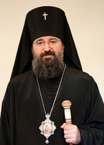

|
ГААГСКАЯ И
НИДЕРЛАНДСКАЯ ЕПАРХИЯ
Русской Православной Церкви Московского Патриархата
День
рождения 1августа.
День
тезоименитства 27 июня

Архиепископ Гаагский и Нидерландский ЕЛИСЕЙ.
Архиепископ Гаагский и Нидерландский ЕЛИСЕЙ (в
миру Илья Владимирович Ганаба) родился 1 августа 1962 г. в Ленинграде. Отец —
Ганаба Владимир Александрович, протодиакон Троицкого собора г. Подольска
Московской обл.
В 1971 г. переехал с родителями в Пензу, где в
1979 г. закончил среднюю школу. Прислуживал в алтаре и на клиросе Успенского
кафедрального собора г. Пензы, находясь в штате архиерейских иподиаконов.
В 1980 г. поступил во 2-ой класс Ленинградской
духовной семинарии и принят в штат иподиаконов архиепископа Выборгского Кирилла,
ректора Ленинградских духовных школ.
В 1982 г. поступил в Ленинградскую духовную
академию.
9 октября 1982 г. архиепископом Выборгским
Кириллом поставлен во чтеца.
17 ноября 1985 г. инспектором Ленинградской
духовной академии архимандритом Феофаном (Галинским) в академическом храме св.
ап. Иоанна Богослова пострижен в монашество с именем Елисей в честь св. пророка
Елисея.
22 ноября 1985 г. архиепископом Тихвинским
Мелитоном, викарием Ленинградской епархии, рукоположен во диакона. 18
января 1986 г. архиепископом Тихвинским Мелитоном рукоположен во пресвитера.
В 1986 г. закончил Ленинградскую духовную академию
и принят в аспирантуру при Московской духовной академии.
20 июня 1987 г. зачислен в братию Данилова монастыря
в г. Москве.
В 1988 г. в составе паломнической делегации
посетил Святую Землю и по благословению председателя Отдела внешних церковных
связей митрополита Минского и Белорусского Филарета в течение трех месяцев
служил в Горненском женском монастыре Русской духовной миссии в Иерусалиме.
27 декабря 1988 г. постановлением Священного
Синода назначен на должность заместителя начальника Русской духовной миссии в
Иерусалиме и возведен в сан игумена с возложением креста с украшениями.
5 октября 1992 г. решением Священного Синода
освобожден от должности заместителя начальника Русской духовной миссии в
Иерусалиме и направлен в распоряжение председателя ОВЦС МП митрополита
Смоленского и Калининградского Кирилла.
10 октября 1992 г. назначен на должность
сотрудника сектора зарубежных учреждений ОВЦС. 23 февраля 1993 г. вновь
зачислен в братию Данилова монастыря г. Москвы. 20 января 1994 г. назначен на
должность заведующего сектором зарубежных учреждений ОВЦС. 15 августа 1995 г.
назначен на должность заведующего сектором межправославных связей ОВЦС.
К празднику Святой Пасхи 1997 г. митрополитом
Смоленским Кириллом возведен в сан архимандрита.
21 августа 1997 г. назначен на должность секретаря
ОВЦС по межправославным связям и зарубежным учреждениям.
С марта 1999 г. по июль 2000 г. по поручению Святейшего
Патриарха Алексия II исполнял обязанности настоятеля Александро-Невского кафедрального
собора в г. Таллине в связи с гражданской регистрацией собора в качестве
ставропигиального прихода.
Определением Священного Синода от 31 марта — 1
апреля 1999 г. назначен представителем Московского Патриархата в Эстонии с
сохранением послушания в Отделе внешних церковных связей.
Постановлением Священного Синода от 7 октября 2000
г. назначен представителем Патриарха Московского и всея Руси при Патриархе
Антиохийском и всего Востока.
Определением Священного Синода от 12 марта 2002 г.
назначен начальником Русской духовной миссии в Иерусалиме и освобожден от
должности представителя Патриарха Московского и всея Руси при Патриархе Великой
Антиохии и всего Востока в г. Дамаск, Сирия.
Решением Священного Синода от 6 октября 2006 г.
(журнал № 111) избран епископом Богородским, викарием Корсунской епархии, с
поручением управления Сурожской епархией.
Наречен во епископа 24 ноября 2006 г. в домовом
храме во имя Всех святых, в земле Российской просиявших, Патриаршей резиденции
в Даниловом монастыре в Москве. Хиротонисан 26 ноября за Божественной
литургией в кафедральном соборном Храме Христа Спасителя. Богослужения
возглавил Святейший Патриарх Алексий II.
Определением Священного Синода от 27 декабря 2007
г. (журнал № 118) назначен епископом Сурожским.
1 февраля 2010 г. возведен в сан архиепископа.
Решением Священного Синода от 28 декабря 2017 г. (журнал
№ 116) назначен Преосвященным Гаагским и Нидерландским с освобождением от
управления Сурожской епархией.
|


")

")